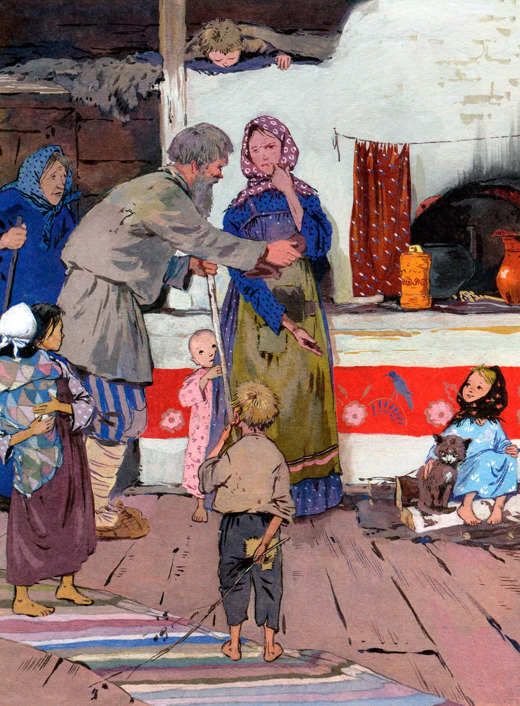

Семьи у Коковани не осталось, он и придумал взять в дети сиротку. Спросил у соседей — не знают ли кого, а соседи и говорят:
— Недавно на Глинке осиротела семья Григория Потопаева. Старших-то девчонок приказчик велел в барскую рукодельню взять, а одну девчоночку по шестому году никому не надо. Вот ты и возьми её.
— Несподручно мне с девчонкой-то. Парнишечко бы лучше. Обучил бы его своему делу, пособника бы растить стал. А с девчонкой как? Чему я её учить-то стану?
Потом подумал-подумал и говорит:
— Знавал я Григорья, да и жену его тоже. Оба весёлые да ловкие были. Если девчоночка по родителям пойдёт, не тоскливо с ней в избе будет. Возьму её. Только пойдёт ли?
Соседи объясняют:
— Плохое житьё у неё. Приказчик избу Григорьеву отдал какому-то горюну и велел за это сиротку кормить, пока не подрастёт. А у того своя семья больше десятка. Сами не досыта едят. Вот хозяйка и взъедается на сиротку, попрекает её куском-то. Та хоть маленькая, а понимает. Обидно ей. Как не пойдёт от такого житья! Да и уговоришь, поди-ка.
— И то правда,— отвечает Кокованя. — Уговорю как-нибудь.
В праздничный день и пришёл он к тем людям, у кого сиротка жила. Видит — полна изба народу, больших и маленьких. У печки девчоночка сидит, а рядом с ней кошка бурая. Девчоночка маленькая, и кошка маленькая и до того худая да ободранная, что редко кто такую в избу пустит. Девчоночка эту кошку гладит, а она до того звонко мурлычет, что по всей избе слышно. Поглядел Кокованя на девчоночку и спрашивает:
— Это у вас Григорьева-то подарёнка? Хозяйка отвечает:
— Она самая. Мало одной-то, так ещё кошку драную где-то подобрала. Отогнать не можем. Всех моих ребят перецарапала, да ещё корми её!
Кокованя и говорит:
— Неласковые, видно, твои ребята. У ней вон мурлычет.
Потом и спрашивает у сиротки:
— Ну как, подарёнушка, пойдёшь ко мне жить? Девчоночка удивилась:
— Ты, дедо, как узнал, что меня Дарёнкой зовут?
— Да так, — отвечает,— само вышло. Не думал, не гадал, нечаянно попал.
— Ты хоть кто? — спрашивает девчоночка.
— Я, — говорит, — вроде охотника. Летом пески промываю, золото добываю, а зимой по лесам за козлом бегаю, да всё увидеть не могу.
— Застрелишь его?
— Нет, — отвечает Кокованя. — Простых козлов стреляю, а этого не стану. Мне посмотреть охота, в котором месте он правой передней ножкой топнет.
— Тебе на что это?
— А вот пойдёшь ко мне жить, так всё и расскажу. Девчоночке любопытно стало про козла-то узнать. И то видит — старик весёлый да ласковый. Она и говорит:
— Пойду. Только ты эту кошку, Мурёнку, тоже возьми. Гляди, какая хорошая.
— Про это,— отвечает Кокованя,— что и говорить. Такую звонкую кошку не взять — дураком остаться. Вместо балалайки она у нас в избе будет.
Хозяйка слышит их разговор. Рада-радёхонька, что Кокованя сиротку к себе зовёт. Стала скорей Дарёнкины пожитки собирать. Боится, как бы старик не передумал. Кошка будто тоже понимает весь разговор. Трётся у ног-то да мурлычет: “Пр-равильно придумал. Пр-равильно”.
Вот и повёл Кокованя сиротку к себе жить. Сам большой да бородатый, а она махонькая, и носишко пуговкой. Идут по улице, и кошчонка ободранная за ними попрыгивает.
Так и стали жить вместе дед Кокованя, сиротка Дарёна да кошка Мурёнка. Жили-поживали, добра много не наживали, а на житьё не плакались, и у всякого дело было. Кокованя с утра на работу уходил, Дарёнка в избе прибирала, похлёбку да кашу варила, а кошка Мурёнка на охоту ходила — мышей ловила. К вечеру соберутся, и весело им.

Старик был мастер сказки сказывать. Дарёнка любила те сказки слушать, а кошка Мурёнка лежит да мурлычет:
“Пр-равильно говорит. Пр-равильно”.
Только после всякой сказки Дарёнка напомнит:
— Дедо, про козла-то скажи. Какой он?
Кокованя отговаривался сперва, потом и рассказал:
— Тот козёл особенный. У него на правой передней ноге серебряное копытце. В каком месте топнет этим копытцем, там и появится дорогой камень. Раз топнет — один камень, два топнет — два камня, а где ножкой бить станет — там груда дорогих камней.
Сказал это, да и не рад стал. С той поры у Дарёнки только и разговору что об этом козле.
— Дедо, а он большой?
Рассказал ей Кокованя, что ростом козёл не выше стола, ножки тоненькие, головка лёгонькая. А Дарёнка опять спрашивает:
— Дедо, а рожки у него есть?
— Рожки-то, — отвечает, — у него отменные. У простых козлов на две веточки, а у этого — на пять веток.
— Дедо, а он кого ест?
— Никого, — отвечает, — не ест. Травой да листом кормится. Ну, сено тоже зимой в стожках подъедает.
— Дедо, а шёрстка у него какая?
— Летом, — отвечает, — буренькая, как вот у Мурёнки нашей, а зимой серенькая.
Стал осенью Кокованя в лес собираться. Надо было ему поглядеть, в которой стороне козлов больше пасётся. Дарёнка и давай проситься:
— Возьми меня, дедо, с собой! Может, я хоть сдалека того козлика увижу.
Кокованя и объясняет ей:
— Сдалека-то его не разглядишь. У всех козлов осенью рожки есть. Не разберёшь, сколько на них веток. Зимой вот — дело другое. Простые козлы зимой безрогие ходят, а этот — Серебряное Копытце — всегда с рожками, хоть летом, хоть зимой. Тогда его сдалека признать можно.
Этим и отговорился. Осталась Дарёнка дома, а Кокованя в лес ушел.
Дней через пять воротился Кокованя домой, рассказывает Дарёнке:
— Ныне в Полдневской стороне много козлов пасётся. Туда и пойду зимой.
— А как же, — спрашивает Дарёнка, — зимой-то в лесу ночевать станешь?
— Там, — отвечает, — у меня зимний балаган у покосных ложков поставлен. Хороший балаган, с очагом, с окошечком. Хорошо там.
Дарёнка опять спрашивает:
— Дедо, а Серебряное Копытце в той же стороне пасётся?
— Кто его знает. Может, и он там.
Дарёнка тут и давай проситься:
— Возьми меня, дедо, с собой! Я в балагане сидеть буду. Может, Серебряное Копытце близко подойдёт — я и погляжу.
Старик сперва руками замахал:
— Что ты! Что ты! Статочное ли дело зимой по лесу маленькой девчонке ходить! На лыжах ведь надо, а ты не умеешь. Угрузнешь в снегу-то. Как я с тобой буду? Замёрзнешь ещё!
Только Дарёнка никак не отстаёт:
— Возьми, дедо! На лыжах-то я маленько умею. Кокованя отговаривал-отговаривал, потом и подумал про себя: “Сводить разве? Раз побывает — в другой не запросится”.
Вот он и говорит:
— Ладно, возьму. Только, чур, в лесу не реветь и домой до времени не проситься.
Как зима в полную силу вошла, стали они в лес собираться. Уложил Кокованя на ручные санки сухарей два мешка, припас охотничий и другое, что ему надо. Дарёнка тоже узелок себе навязала. Лоскуточков взяла кукле платье шить, ниток клубок, иголку да ещё верёвку. “Нельзя ли, — думает, — этой верёвкой Серебряное Копытце поймать?”
Жаль Дарёнке кошку свою оставлять, да что поделаешь! Гладит кошку-то на прощанье, разговаривает с ней:
— Мы, Мурёнка, с дедом в лес пойдём, а ты дома сиди, мышей лови. Как увидим Серебряное Копытце, так и воротимся. Я тебе тогда всё расскажу.
Кошка лукаво посматривает, а сама мурлычет: “Пр-ра-вильно придумала. Пр-равильно”.

Пошли Кокованя с Дарёнкой. Все соседи дивуются:
— Из ума выжил старик! Такую маленькую девчонку в лес зимой повёл!
Как стали Кокованя с Дарёнкой из заводу выходить, слышат — собачонки что-то сильно забеспокоились. Такой лай да визг подняли, будто зверя на улицах увидали. Оглянулись, — а это Мурёнка серединой улицы бежит, от собак отбивается. Мурёнка к той поре поправилась. Большая да здоровая стала. Собачонки к ней и подступиться не смеют.
Хотела Дарёнка кошку поймать да домой унести, только где тебе! Добежала Мурёнка до лесу, да и на сосну. Пойди поймай!
Покричала Дарёнка, но не могла кошку приманить. Что делать? Пошли дальше. Глядят — Мурёнка стороной бежит. Так и до балагана добралась.
Вот и стало их в балагане трое. Дарёнка хвалится:
— Веселее так-то.
Кокованя поддакивает:
— Известно, веселее.
А кошка Мурёнка свернулась клубочком у печки и звонко мурлычет: “Пр-равильно говоришь. Пр-равильно”.
Козлов в ту зиму много было. Это простых-то. Кокованя каждый день то одного, то двух к балагану притаскивал. Шкурок у них накопилось, козлиного мяса насолили — на ручных санках не увезти. Надо бы в завод за лошадью сходить, да как Дарёнку с кошкой в лесу оставить! А Дарёнка попривыкла в лесу-то. Сама говорит старику:
— Дедо, сходил бы ты в завод за лошадью. Надо ведь солонину домой перевезти. Кокованя даже удивился:
— Какая ты у меня разумница, Дарья Григорьевна! Как большая рассудила. Только забоишься, поди, одна-то.
— Чего, — отвечает, — бояться! Балаган у нас крепкий, волкам не добиться. И Мурёнка со мной. Не забоюсь. А ты поскорее ворочайся всё-таки!
Ушёл Кокованя. Осталась Дарёнка с Мурёнкой. Днём-то привычно было без Коковани сидеть, пока он козлов выслеживал… Как темнеть стало, запобаивалась. Только глядит — Мурёнка лежит спокойнёхонько. Дарёнка и повеселела. Села к окошечку, смотрит в сторону покосных ложков и видит — от лесу какой-то комочек катится.

Как ближе подкатился, разглядела — это козёл бежит. Ножки тоненькие, головка лёгонькая, а на рожках по пяти веточек. Выбежала Дарёнка поглядеть, а никого нет. Подождала-подождала, воротилась в балаган, да и говорит:
— Видно, задремала я. Мне и показалось. Мурёнка мурлычет: “Пр-равильно говоришь. Пр-равильно”.
Легла Дарёнка рядом с кошкой да и уснула до утра.
Другой день прошёл. Не воротился Кокованя. Скучненько стало Дарёнке, а не плачет. Гладит Мурёнку да приговаривает:
— Не скучай, Мурёнушка! Завтра дедо непременно придёт.
Мурёнка свою песенку поёт: “Пр-равильно говоришь. Пр-равильно”.
Посидела опять Дарёнушка у окошка, полюбовалась на звёзды. Хотела спать ложиться — вдруг по стенке топоток прошёл. Испугалась Дарёнка, а топоток по другой стене, потом по той, где окошечко, потом — где дверка, а там и сверху запостукивало. Негромко, будто кто лёгонький да быстрый ходит.
Дарёнка и думает: “Не козёл ли тот, вчерашний, прибежал?”

И до того ей захотелось поглядеть, что и страх не держит. Отворила дверку, глядит, а козёл — тут, вовсе близко. Правую переднюю ножку поднял — вот топнет, а на ней серебряное копытце блестит, и рожки у козла о пяти ветках.
Дарёнка не знает, что ей делать, да и манит его, как домашнего:
— Ме-ка! Ме-ка!
Козёл на это как рассмеялся! Повернулся и побежал.
Пришла Дарёнушка в балаган, рассказывает Мурёнке:
— Поглядела я на Серебряное Копытце. И рожки видела и копытце видела. Не видела только, как тот козлик ножкой топает, дорогие камни выбивает. Другой раз, видно, покажет.
Мурёнка знай свою песенку поёт: “Пр-равильно говоришь. Пр-равильно”.
Третий день прошёл, а все Коковани нет. Вовсе затуманилась Дарёнка. Слёзки запокапывали. Хотела с Мурёнкой поговорить, а её нету. Тут вовсе испугалась Дарёнушка, из балагана выбежала кошку искать.
Ночь месячная, светлая, далеко видно. Глядит Дарёнка — кошка близко на покосном ложке сидит, а перед ней козёл. Стоит, ножку поднял, а на ней серебряное копытце блестит.
Мурёнка головой покачивает, и козёл тоже. Будто разговаривают. Потом стали по покосным ложкам бегать.
Бежит-бежит козёл, остановится и давай копытцем бить. Мурёнка подбежит, козёл дальше отскочит и опять копытцем бьёт. Долго они так-то по покосным ложкам бегали. Не видно их стало. Потом опять к самому балагану воротились.
Тут вспрыгнул козёл на крышу и давай по ней серебряным копытцем бить. Как искры, из-под ножки-то камешки посыпались. Красные, голубые, зелёные, бирюзовые — всякие.
К этой поре как раз Кокованя и вернулся. Узнать своего балагана не может. Весь он как ворох дорогих камней стал. Так и горит-переливается разными огнями. Наверху козёл стоит — и всё бьёт да бьёт серебряным копытцем, а камни сыплются да сыплются.

Вдруг Мурёнка скок туда же! Встала рядом с козлом, громко мяукнула, и ни Мурёнки, ни Серебряного Копытца не стало.
Кокованя сразу полшапки камней нагрёб, да Дарёнка запросила:
— Не тронь, дедо! Завтра днём ещё на это поглядим.
Кокованя и послушался. Только к утру-то снег большой выпал. Все камни и засыпало. Перегребали потом снег-то, да ничего не нашли. Ну, им и того хватило, сколько Кокованя в шапку нагрёб.
Всё бы хорошо, да Мурёнки жалко. Больше её так и не видали, да и Серебряное Копытце тоже не показался. Потешил раз — и будет.
А по тем покосным ложкам, где козёл скакал, люди камешки находить стали. Зелёненькие больше. Хризолитами называются. Видали?